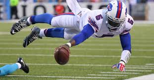
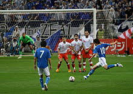

Two decades after lifting the World Cup on home soil, France is ready to relive the glory with one of the most talented teams they have had in recent memory. Kylian Mbappe, Ousmane Dembele, Presnel Kimpembe, are a few eye-catching names in recent years, and they are set to join superstars Cristiano Ronaldo and Lionel Messi at the World Cup in Russia, reports Xinhua news agency. The final edition of World Cup in the 20th century created indelible memories for France, when it came back from two consecutive absences from the tournament to stand on top of the world after beating Brazil 3-0 in the final. France entered their "Golden Era" courtesy midfield maestro Zinedine Zidane and lethal forward Thierry Henry, in a roster also featuring Didier Deschamps, Les Bleus' current head coach.

That squad also included stars like Laurent Blanc, Emmannuel Petit, Robert Pires, Christian Dugarry, David Trezeguet, Lilian Thuram, Marcel Desailly and Patrick Vierra among others. Deschamps has valued the team discipline and spirit more than ever since he took over after the 2012 European Championship. The defensive midfielder didn't want a repeat of the World Cup eight years ago when players refused to train and France had to face an embarrassing early exit. Adrien Rabiot's removal from the standby list was the latest challenge that Deschamps has had faced in his tenure. The frustrated Paris Saint-Germain midfielder declined to be named in the 11-member standby list, which was described by Deschamps as a "huge mistake".

Adrien Rabiot's removal from the standby list was the latest challenge that Deschamps has had faced in his tenure. The frustrated Paris Saint-Germain midfielder declined to be named in the 11-member standby list, which was described by Deschamps as a "huge mistake". Deschamps also read a letter from injured center half Laurent Koscielny at a meeting, calling on national pride and team spirit from his team members. "It's a good idea and I've read the letter to players," said the 49-year-old. Under Deschamps' spell, France made into quarter-finals of the World Cup in Brazil, losing to eventual winners Germany. Two years later they fell short against Portugal in the 2016 Euro final. They can dream more this time, as a string of talents have emerged in recent years.